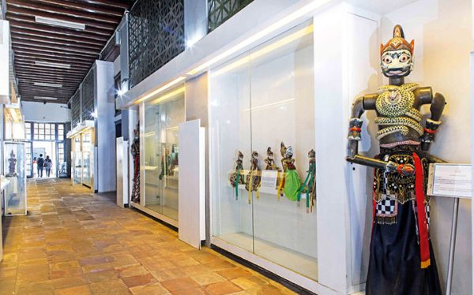
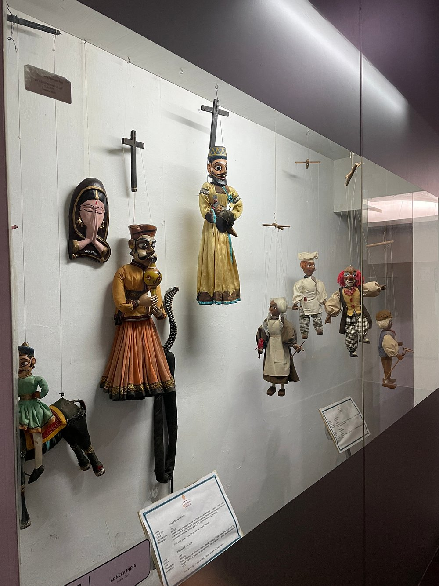
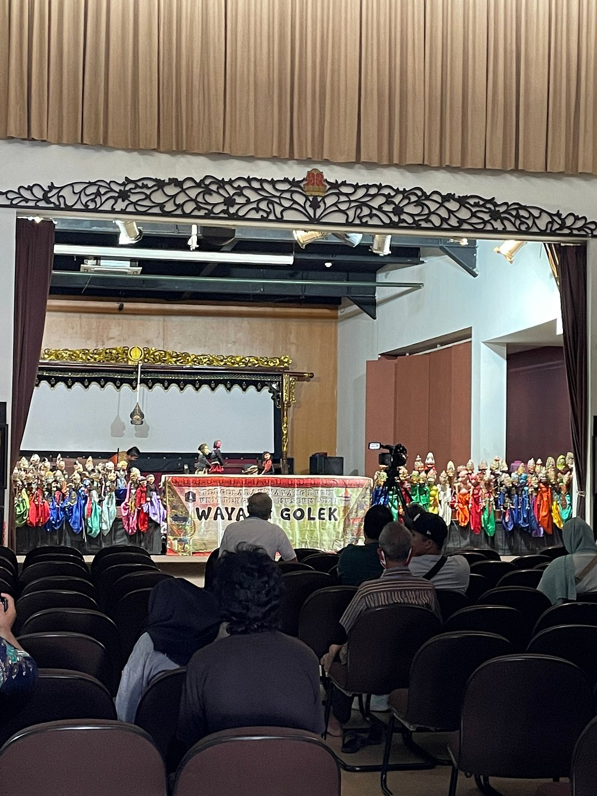
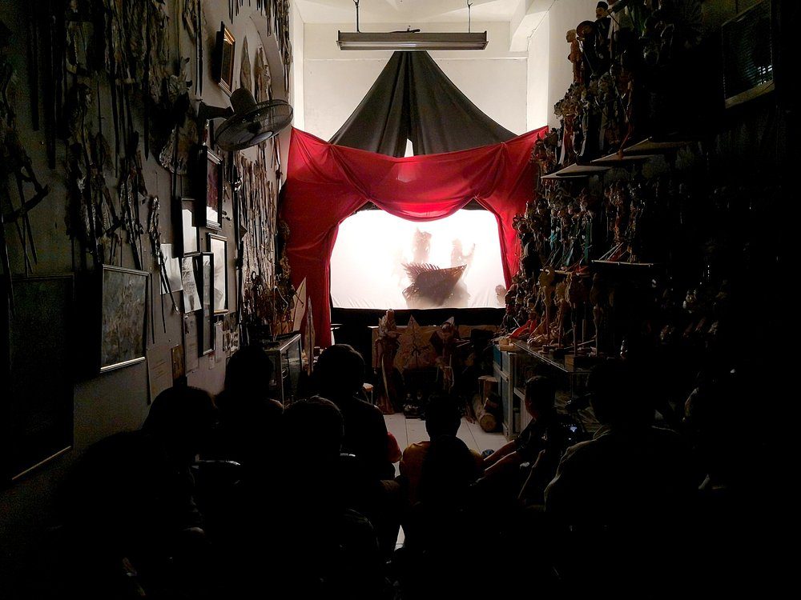

Tempat di mana cerita tradisional dan seni pertunjukan
hidup kembali melalui koleksi wayang yang kaya dan beragam. Di sini, Anda akan menemukan berbagai
jenis wayang dari seluruh Nusantara dan mancanegara, termasuk wayang kulit, wayang golek, wayang klitik,
hingga wayang kontemporer. Setiap wayang memiliki kisah dan sejarahnya sendiri, mencerminkan kekayaan
budaya dan nilai-nilai tradisi yang telah diwariskan dari generasi ke generasi.
Galeri ini dirancang untuk memberikan pengalaman yang mendalam, tidak hanya dengan melihat koleksi, tetapi juga memahami perjalanan seni wayang melalui foto dokumentasi.
Jelajahi keindahan seni wayang dan temukan harmoni antara tradisi dan kreativitas di setiap sudut galeri. Ayo bergabung dalam perjalanan budaya yang memukau dan temukan cerita di balik setiap wayang!
Galeri ini dirancang untuk memberikan pengalaman yang mendalam, tidak hanya dengan melihat koleksi, tetapi juga memahami perjalanan seni wayang melalui foto dokumentasi.
Jelajahi keindahan seni wayang dan temukan harmoni antara tradisi dan kreativitas di setiap sudut galeri. Ayo bergabung dalam perjalanan budaya yang memukau dan temukan cerita di balik setiap wayang!